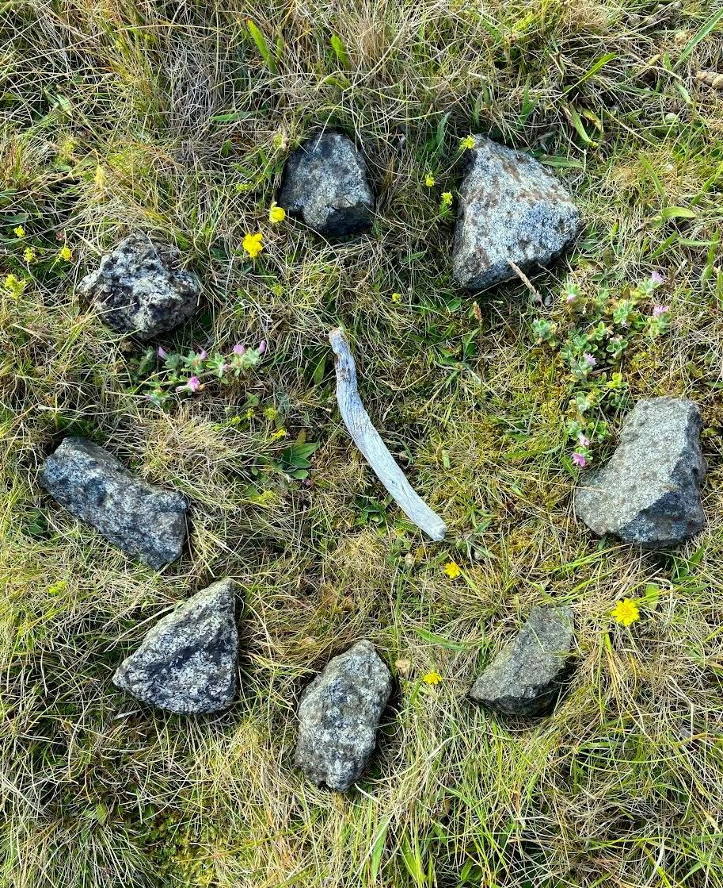
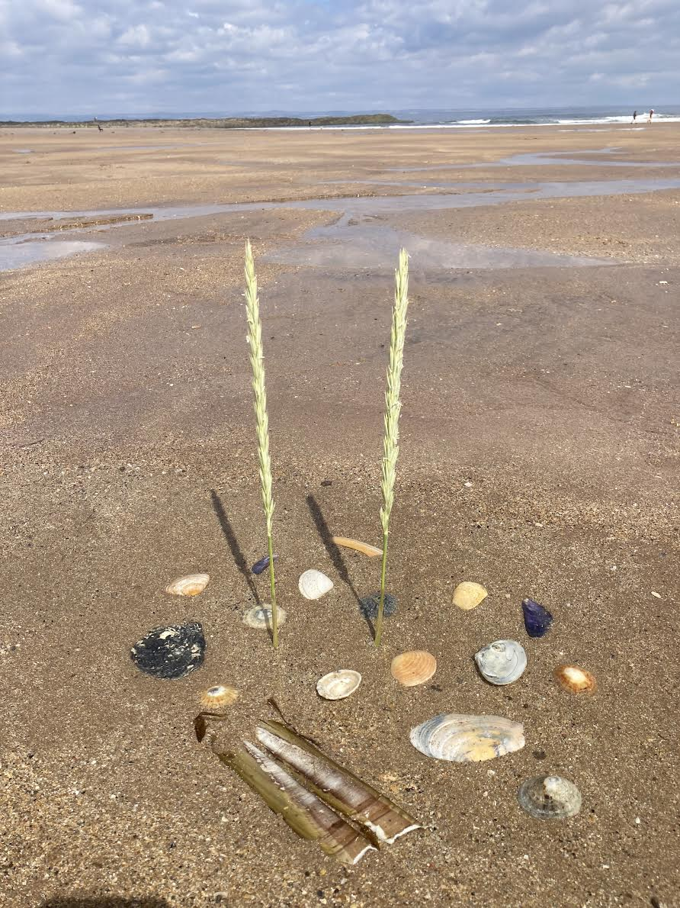

Sibongile Pradhan
Mediation • Deep Listening • Coaching & Training • Facilitation • Grief Tending
Hello.
I work with individuals, couples, families, colleagues, community groups and organisational teams to strengthen communication, explore challenges, develop understanding, navigate conflict, hold difficult conversations and express grief.
I believe that when people experience being heard and understood, new possibilities emerge. My work is grounded in the principles of Nonviolent Communication (NVC). To it all I bring warmth, curiosity and the intention to help people reconnect with themselves and one another.
Based in Edinburgh, happy to travel.

My Five Areas of Work

Mediation
I hold space for conflict to be brought into the open, where each person can be heard for what matters to them, understand what’s going on for others, and explore options for moving forward in a way that works well-enough for everyone.
I offer mediation in situations where there are existing relationships to be restored, between colleagues, friends, partners, neighbours, family members, students or community group members, where a rift has occurred and all parties are keen to repair it, or at least willing to give it a go.
Often I work with a co-mediator. Our approach has nonviolent communication at its heart, is accredited through Scottish Mediation and certified through the University of St Andrews Mediation Service. (See Sands Mediation)

Deep Listening akin to Counselling
I offer sessions to which you can bring your thoughts, feelings, fears and desires, where everything is welcome without judgment. I will support you to connect with your emotions, to explore what is going on for you, and connect with what deeply matters. I will hold space for you to go wherever you choose.
I have eight years of counselling experience, and training in counselling skills. While I am not a certified counsellor or therapist, many clients tell me that the work we do is therapeutic. My approach is intuitive, relational, and grounded in the principles of nonviolent communication.

Nonviolent Communication (NVC) Coaching and Training
Coaching. If you would like to deepen your NVC practice, I offer coaching based on real situations in your life (or imagined examples if you prefer). I will support you to connect with the feelings and needs beneath the words and actions of yourself and other people. Together we’ll uncover what is really important to you in a situation, and find ways to express it authentically and with care for both yourself and the other. This is the essence of nonviolent communication (NVC) and I will coach you more or less explicitly depending on your preference and learning style.
Training. I offer training in the fundamentals of nonviolent communication for individuals, couples, families and teams/groups, over a timeframe that suits you. Twice a year I co-teach an NVC Foundation Training in central Scotland with a colleague.

Group Facilitation
I support organisations, teams and groups to work together more effectively, by combining my experience of facilitating participatory community development and nonviolent communication.
This could be the facilitation of team away-days, or their development of vision and purpose; it could be supporting difficult conversations, facilitating decision-making, navigating a transition, or assisting teams develop healthier ways of working with conflict. I help organisations create strategies to address conflict, where clear agreements and systems are in place before tensions escalate into rifts.
Grief Tending
Grief is a natural response to loss, change or things not turning out as we expected. I can support you to be more fully in touch with grief that you carry, whether it is recent or long-held, personal or collective.
Your grief may appear as sorrow, pain, anger or other feelings. It may arise from the loss of a loved one, a relationship, a community, a place, a way of life, or from an unrealised hope, or concerns about the wider world. Whatever form it takes, we will together welcome and encourage the expression of your grief.
If you long for a space in which to share grief in the companionship of others, I can help you create and facilitate community grief circles.
About Sibongile Pradhan
I am committed to a world of social and environmental justice, and one where everyone has opportunities for participation, personal growth, and to know themselves as relational beings within the ecology of life on Earth. I believe that key to this is the development of strong local communities, effective support organisations, and an understanding of which aspects of our journeys to wholeness relate to the personal and which to societal structures. There is much I grieve about what human beings do to each other and have done to the planet. I want the exploitation and violation of the Earth to end, just as I want all people everywhere, especially women and girls, to be free from sexual violence. I want all beings to be treated with dignity and respect, and for us to find ways to live within planetary boundaries.
Many people wonder about my name. My parents, from the UK, met during voluntary service in Swaziland (now Eswatini) and married. They gave me a Swazi name (with the meaning ‘we give thanks’). Across Southern Africa it is pronounced in different ways; I have come to be known phonetically as “Sibongeelee”. After living and working in Nepal for three years in community forestry and climate change, I married a Nepali man and have taken on his family name. He is a fine dancer, amongst other things, and uses dance therapeutically to bring about at times incredible responses in the children and adults with whom he works.

“Your presence is the most precious gift you can give to another human being.”
Marshall Rosenberg
“As we learn to speak from the heart we are changing the habits of a lifetime.”
Marshall Rosenberg
Looking to find out more?
Each area of my work begins with a free 50-minute online session: a chance to meet, talk about what you’re looking for, and see whether working together feels right. Going forward sessions can be online or in person.
Edinburgh, Scotland